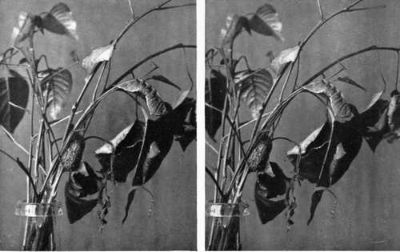

Chapter XVI. Protective Colouration
Description
This section is from the book "Nature Photography For Beginners", by E. J. Bedford. Also available from Amazon: Nature Photography for Beginners.
Chapter XVI. Protective Colouration
I desire to draw the attention of the reader to a brief consideration of the intensely interesting subject of protective colouring which occurs in many forms of life. The student will be sure to come upon a good many instances of it during the course of his own work. Personally I do not doubt that one of the laws of Nature is, as pointed out by the great Darwin, " the survival of the fittest." To put it another way, as bearing more directly on the subject under consideration, those animals or other forms of life which can conceal themselves best are the ones most likely to escape from their enemies, and to survive to perpetuate their species.
To give a few examples which are probably familiar to almost every one. Animals and birds which live in Arctic regions, and which have a dark or coloured coat or plumage in the summer, change this for one of a snowy white for the winter. The speckled plumage of the Ptarmigan and the brown fur coat of the Hare or the Fox which inhabit northern latitudes become white by the time the snow is on the ground. This change is brought about gradually, but it is not universal, only taking place in the higher latitudes before mentioned. The coat of the Fox, for instance, living in southern districts does not change. By this change the Ptarmigan and the Hare are more easily able to escape from their mutual enemy the Fox, but if the coat of the latter did not change, too, he would be likely to die of starvation, because his presence would be observed before he had a chance to secure his prey. And so the protection thus afforded also helps him to survive in the struggle for existence which is ever going on in Nature.
Darwin has shown in one of his books 1 that the frequency of certain flowers in a district may depend upon the number of cats in the neighbourhood. The cats will catch the mice which, if not kept under, would destroy the humble-bees, which alone fertilise certain kinds of clover and other flowers.
But to return to the subject of " protective colouration 99 or " protective resemblance " as it is sometimes called. I have sometimes heard a person who was looking at natural history photographs observe that a certain nest, for example, did not show very clearly, or that they could not see the caterpillar or insect which the photograph was supposed to show. Personally I should take an expression of opinion of this character concerning my own work as a compliment, because objects such as these are not intended to show themselves clearly, and if they did so would be unnatural. The bird in building its nest endeavours to conceal it as much as possible, and if it be placed in a conspicuous position, as sometimes occurs, it is generally made to match its surroundings in such a marvellous manner that the very fact of being built in such an open spot often affords the needed protection by taking the majority of observers off their guard, and as they do not expect to find a nest in so exposed a place they do not look for it and it escapes detection.
The larvae of some of the " Geometers " are known as "stick" caterpillars, and provide another excellent example of protective resemblance. These caterpillars fasten themselves to the stems of their food-plant by clasping it with their anal claspers, and then stick out their bodies perfectly rigid and make angles with the stems, to which they attach themselves similar to the angles made by the smaller stems. Their bodies also have swellings which look exactly like the natural nodes on the stalks themselves, and there are parts of a brown colour also looking exactly like the withered buds on the stalks of the food-plant. These caterpillars may be found by a careful search in the day time, in the positions mentioned, when they are resting. They feed at night, as do most other kinds of larvae, and so have more chance of escape from the sharp eyes of the birds which hunt for them by day.
1 The Origin of Species, chap. iii. p. 91.
The Lappet Moth at rest looks exactly like a withered leaf both in colour and shape. It suspends itself from a stalk just as a dead leaf would hang, and is no doubt often passed over by its enemies. The Buff-tip Moth is another instance. When its wings are folded, the insect looks more like a short piece of stick cut obliquely than a moth, and this " protective resemblance " cannot fail to be of advantage to the species. The cocoons of the Puss Moth are exceedingly difficult to discover on the bark of the tree, especially as the larva before retiring inside fastens pieces of the bark on the outside of the case, and the whole is glued together so tightly that it forms a very effective protection from injury.
Fig. 83. Larvae and Cocoon of Puss Moth.
Many birds have dark plumage on their wings and backs and a lighter underside. Take the Lapwing, for instance. The upper surface of this bird is a greenish-black and the under surface is light. When it is resting on the ground the light from the sky falls fully on the upper surface and illuminates it, making it appear to the eye lighter than it actually is; while the underside is in shadow, appearing to the eye, therefore, darker than its own local colour. The effect of this is to reduce the contrasts of tone, and the two surfaces merge, as it were, into one another, and the bird seems to become connected more or less with its surroundings. If the upper surface of the bird were light and its under surface dark the effect of the natural light and shade upon it would be still further to increase these contrasts, thereby making the bird more conspicuous than ever. The Ringed Plover, which runs about on the shingle by the sea-shore, is another similar instance of colouration, and many others might be given.
In the Natural History Museum, South Kensington, there is to be seen a model where the effects I have been endeavouring to explain are shown most perfectly. The model consists of two birds in a glass case, which are arranged in a certain light and coloured to show the different effect produced under similar circumstances to those just mentioned. The model was made and presented to the Museum by Mr. Abbott Thayer, an American artist, who is also a devoted student of wild life, and every one interested in Nature study should endeavour to see it.
Continue to:
Tags
nature, photography, art, birds, camera